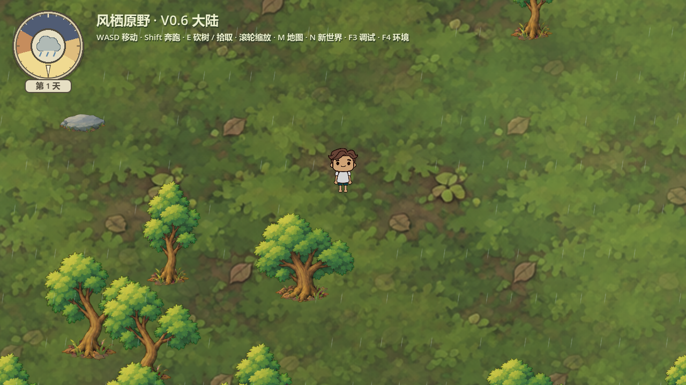
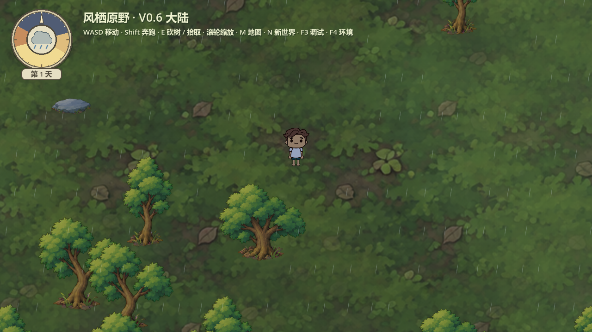
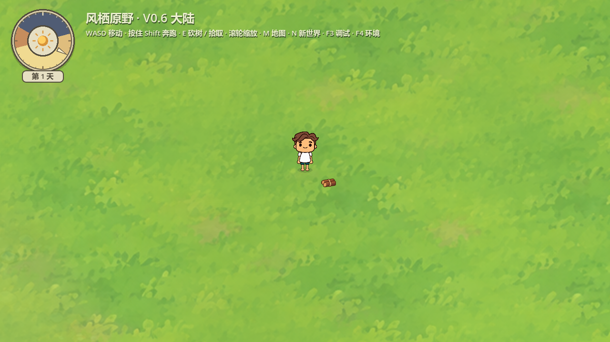
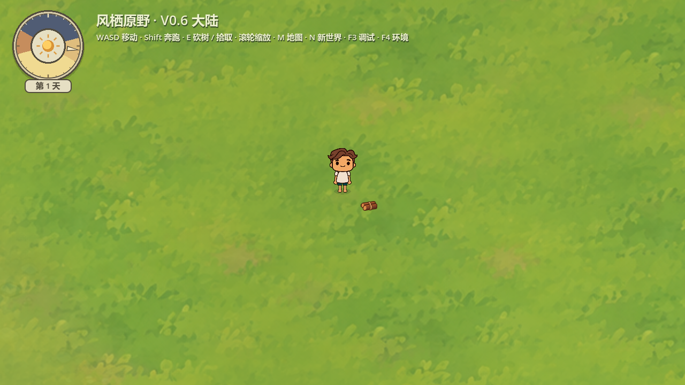
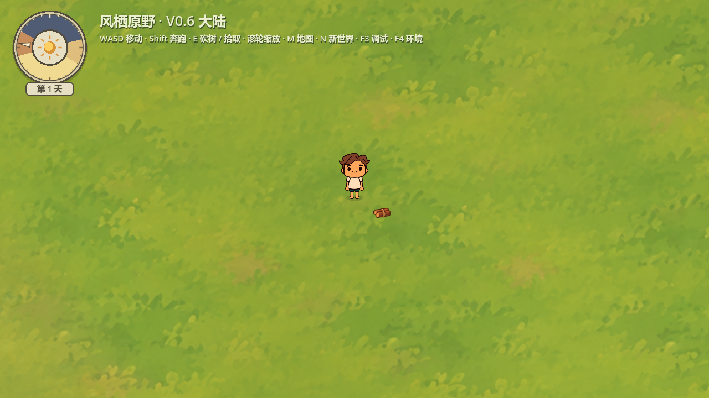
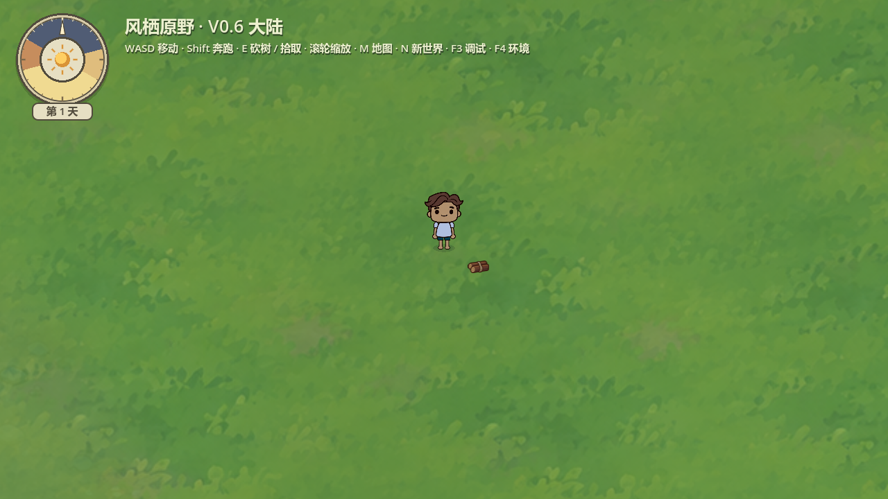
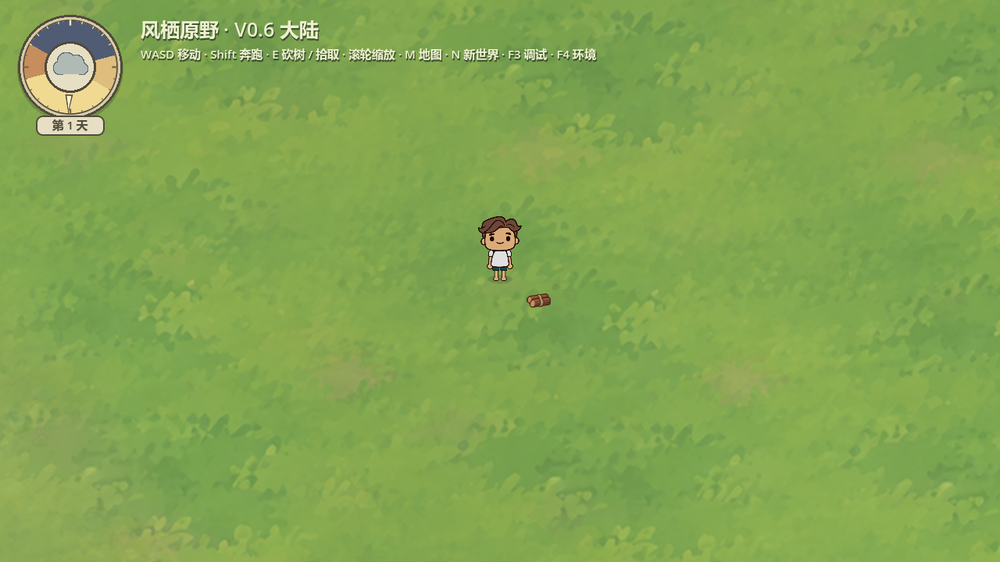
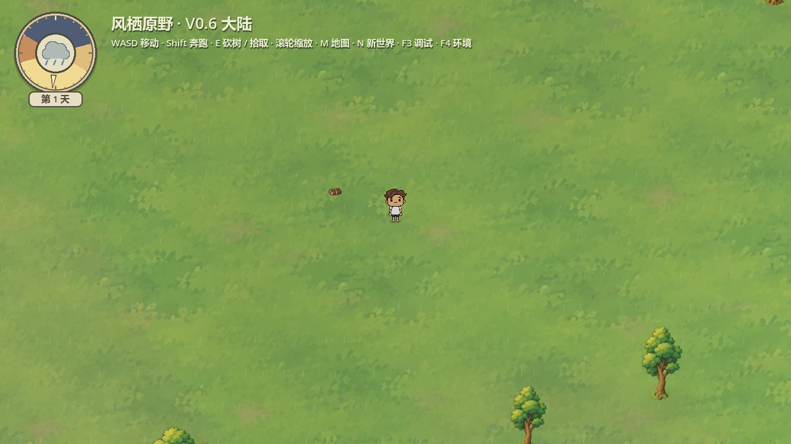
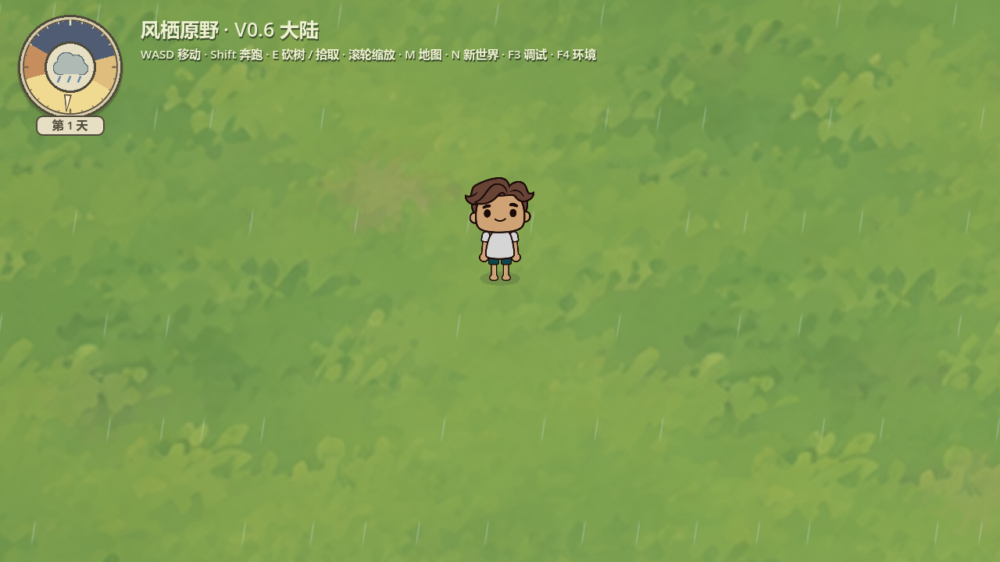
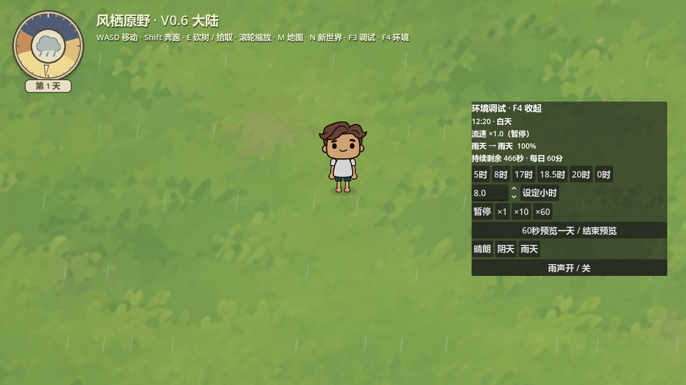

正式游戏：双击项目根目录 Start-Playtest.cmd。F4 环境调试：设时、暂停、倍速、60秒一天预览、晴阴雨切换。
左上角为最新圆盘：24小时亮暗扇区、连续指针、中央天气渐变图标和天数。地图与角色保持。
专项报告：30项、0失败。Godot 4.7.2 / Compatibility / RTX5060。短时180帧雨景采样含60FPS限帧，仅代表此已加载场景，非大地图性能承诺。天气光照与合成雨声主观效果待用户确认。









